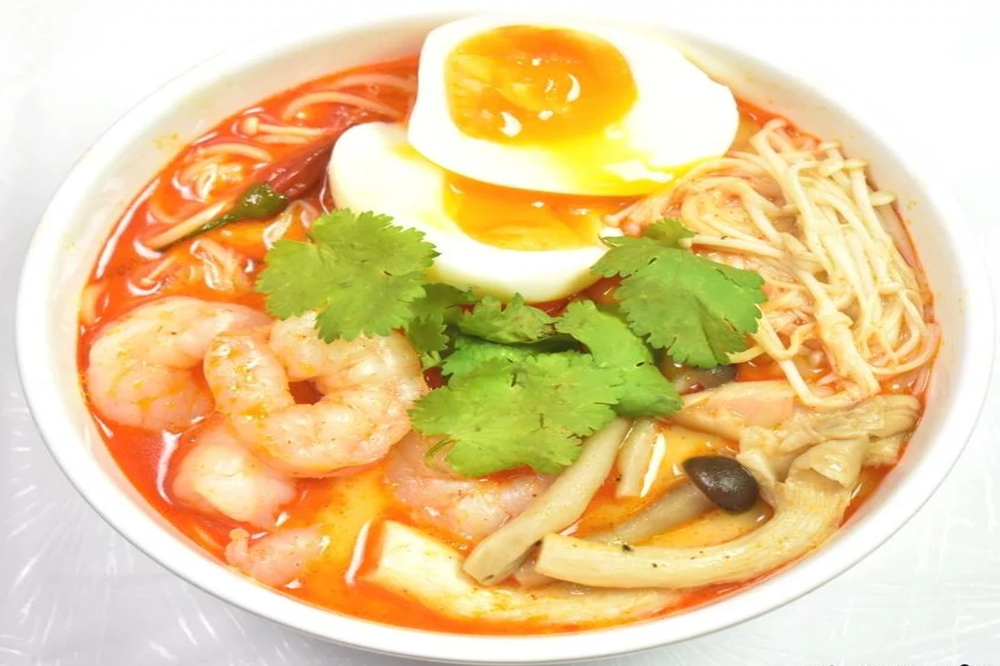
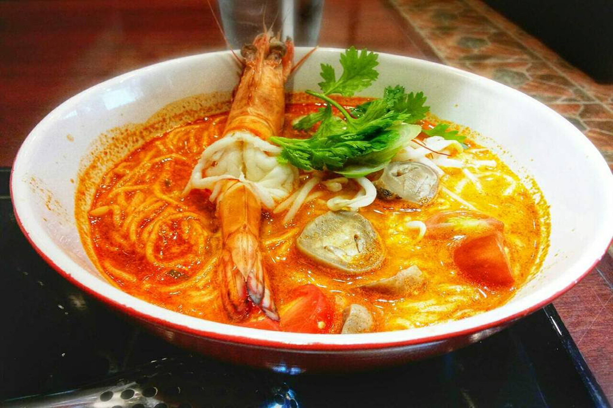
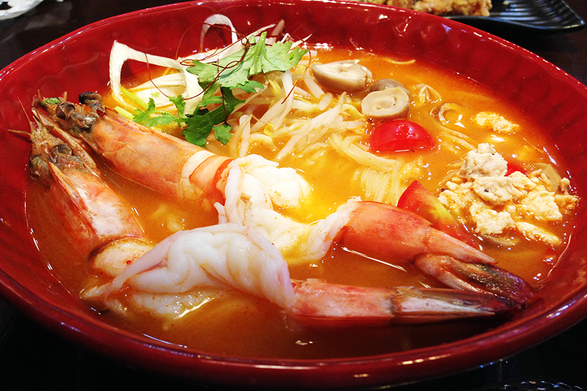

ต้มยำกุ้งราเมน



- เส้นราเมน 80 กรัม
- น้ำเปล่า 500 ml.
- ไข่ต้มยางมะตูม 1 ฟอง
- ข่า ตะไคร้ ใบมะกรูดเล็กน้อย
- พริกขี้หนู 3 เม็ด
- เห็ดนางฟ้า 30 กรัม
- เห็ดเข็มทอง 25 กรัม
- เห็ดชิเมจิ 25 กรัม
- น้ำตาลทราย 2 ช้อนชา
- น้ำปลา 3 ช้อนโต๊ะ
- น้ำมะนาว 3 ช้อนโต๊ะ
- กะทิ 50 ml.
- น้ำพริกเผา 1 ช้อนโต๊ะ
- มันกุ้ง1 ช้อนโต๊ะ
- ผักชีเล็กน้อย
ส่วนผสม
- เตรียมวัตถุดิบทั้งหมด
- ใส่น้ำเปล่าลงในหม้อหุงข้าว รอเริ่มเดือด ใส่ข่า ตะไคร้ ใบมะกรูด
- ใส่เส้นราเมน รอเดือด
- ใส่เห็ดนางฟ้า เห็ดเข็มทอง เห็ดชิเมจิ
- ปรุงรสด้วย น้ำตาลทราย น้ำปลา น้ำพริกเผา มันกุ้ง คนให้เข้ากัน
- ใส่กุ้งลงไป
- ปิดไฟ ดึงปลั๊กออก ใส่น้ำมะนาว
- ใส่กะทิ คนให้เข้ากัน
- จัดใส่ชาม ใส่ไข่ยางมะตูม โรยหน้าด้วยผักชี พร้อมอร่อย
วิธีทำ
ขอบคุณข้อมูลสูตรอาหารนี้จาก